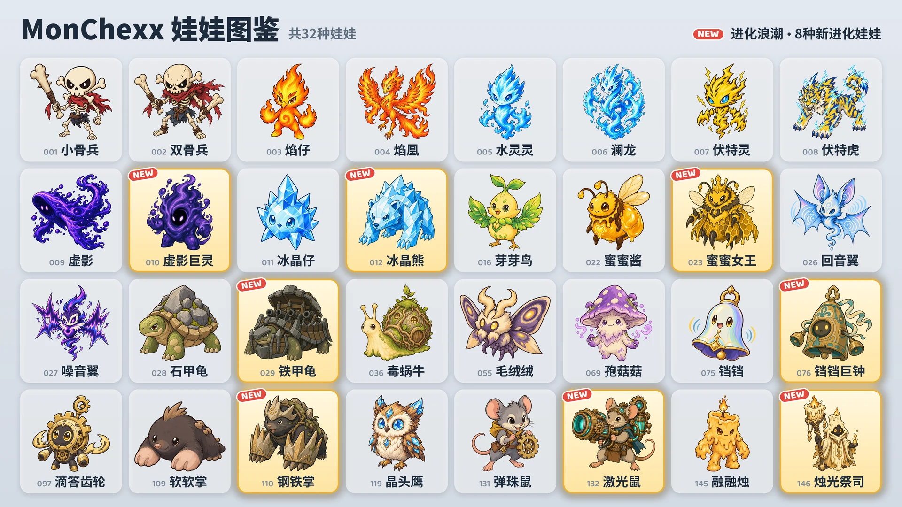

预计将于10月16日新增8种进化娃娃。

8种新进化娃娃
- 虚影巨灵：由虚影进化 · 坦克
- 冰晶熊：由冰晶仔进化 · 坦克 / 战士
- 蜜蜜女王：由蜜蜜酱进化 · 辅助 / 远程
- 铁甲龟：由石甲龟进化 · 坦克
- 铛铛巨钟：由铛铛进化 · 坦克 / 辅助
- 钢铁掌：由软软掌进化 · 坦克 / 刺客
- 激光鼠：由弹珠鼠进化 · 远程
- 烛光祭司：由融融烛进化 · 辅助 / 远程
获取方式
自10月16日起，预计可通过以下方式获取：
- 抓娃娃机（活动）：活动期间（10月16日至24日），预计除一排两端的两台外，所有机台都会放入1种新进化娃娃和另外2种娃娃。活动结束后，新进化娃娃也会以与其他娃娃相同的比例放入。
- 娃娃兑换处：用10个备用娃娃可换取自选的娃娃（自选兑换），用3个可换取随机娃娃（随机兑换）。
- 娃娃包：预计也能开出新进化娃娃。
使用进化娃娃
- 进化娃娃需要单独收集，拥有后即可直接放进队伍。
- 在“组建比赛队伍”中选择娃娃后，可用基础和进化切换形态。
- 同一进化路线的娃娃，一支队伍中只能放入一个。
- 进化娃娃的等级与基础形态的娃娃分开提升。
新娃娃
以“攻击力”“魔力”“最大生命值”的百分比表示的数值，会随娃娃等级提升而变大。
虚影巨灵 · 坦克 · 射程1格
- 虚空吸收：最大生命值增加魔力的640% + 战斗开始时最大生命值的6%，并恢复等量的生命值。随后对周围1格内的所有敌人造成相当于自身当前生命值10%的魔法伤害。增加的最大生命值持续到战斗结束。
- 虚空吞噬：4格内的敌人每次使用主动技能时，获得10点法力。
冰晶熊 · 坦克/战士 · 射程1格
- 冰霜重击：对当前目标造成相当于攻击力820%的物理伤害，对周围1格内的敌人造成385%的物理伤害，并施加冰霜（攻击速度降低15%，持续8秒）。当前目标身上的冰霜叠加到3层时，该目标冰冻1.5秒，期间无法行动，也无法获得法力。
- 水晶护体：受到的魔法伤害降低20%。也适用于魔法持续伤害。
蜜蜜女王 · 辅助/远程 · 射程3格
- 蜂王浆：为所有工蜂恢复相当于其最大生命值100%的生命值，并使其攻击速度提高200%，持续3秒。工蜂少于3只时，召唤1只工蜂。
- 工蜂军团：最多率领3只工蜂。工蜂的属性随蜜蜜女王的等级而定，工蜂每秒受到相当于其最大生命值4%的伤害。蜜蜜女王被击败后，工蜂会陷入狂暴，造成和受到的伤害都变为2倍。
铁甲龟 · 坦克 · 射程1格
- 旋转炮击：在原地按逆时针方向旋转，开炮6次。每发炮弹对该方向2格内的第一个敌人造成相当于攻击力1540%的物理伤害。开炮期间不会移动，也无法获得法力；被眩晕或冰冻时停止。
- 堡垒甲壳：周围1格内每有一名敌人，防御力和魔法抗性各提高35。
铛铛巨钟 · 坦克/辅助 · 射程1格
- 鸣钟：对2格内的所有敌人造成相当于魔力555%的魔法伤害，并嘲讽这些敌人，持续2秒。在此期间，将受到的普通攻击伤害（减免前）的35%，以魔法伤害的形式反弹给2格内的所有敌人。
- 共鸣：2格内的其他队友每次使用主动技能时，恢复相当于魔力120%的生命值。
钢铁掌 · 坦克/刺客 · 射程1格
- 地道强袭：解除自身所有减益效果并钻入地下，移动到周围敌人最多的空格子，然后对周围1格内的所有敌人造成相当于攻击力740%的物理伤害。移动期间不会受到攻击。
- 岩石之掌：防御力提高，提高量相当于攻击力的50%。
- 以0点法力开始战斗。
激光鼠 · 远程 · 射程4格
- 激光炮：充能1.5秒后，朝当前目标方向发射宽度为1格的激光，直达场地边缘，对命中的所有敌人造成相当于攻击力1210%的魔法伤害。若充能期间被眩晕或冰冻，发射将被取消。
- 预热电路：每次普通攻击使攻击速度提高15%（最多100%）。使用主动技能后重置。
烛光祭司 · 辅助/远程 · 射程3格
- 不灭之火：为生命值最低的队友（不包括自身）施加标记和相当于魔力375%的护盾，持续5秒。带有标记的队友即将因直接伤害被击败时，由烛光祭司代为承受该伤害的200%。
- 融化蜂蜡：受到的直接伤害会在4秒内分摊，逐渐从生命值中扣除。
排位赛 · 徽章
- 排位赛对手预计也会使用新进化娃娃。
- 8种新进化娃娃不计入“第1赛季收藏”徽章。
- 拥有5种不同的进化娃娃即可获得“进化博士”徽章。进化娃娃预计将增加到13种。
所有娃娃的平衡调整，请查看“平衡调整 · 战斗系统”更新说明。